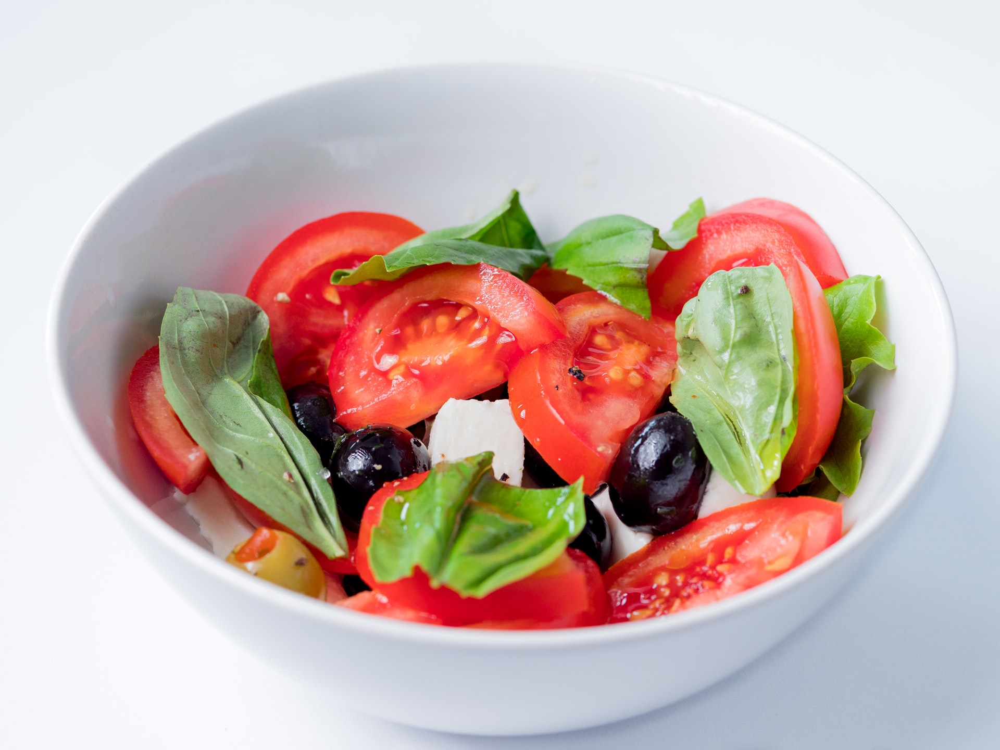

Spicy Italian Salad

An Italian Salad showcasing the best of Italy!
Ingredients:
- ½ cup canola oil
- ⅓ cup tarragon vinegar
- 1 tablespoon white sugar
- 1 teaspoon chopped fresh thyme
- ½ teaspoon dry mustard
- 2 cloves garlic, minced
- 1 (8 ounce) can artichoke hearts, drained and quartered
- 5 cups romaine lettuce - rinsed, dried, and chopped
- 1 red bell pepper, cut into strips
- 1 carrot, grated
- 1 red onion, thinly sliced
- ¼ cup black olives
- ¼ cup pitted green olives
- ½ cucumber, sliced
- 2 tablespoons grated Romano cheese
- ground black pepper to taste
Steps
This delicious salad can be made relatively easy by following the steps below.
Make sure to have all of your ingredients ready!
- In a medium container with a lid, mix canola oil, tarragon vinegar, sugar, thyme, dry mustard, and garlic. Cover, and shake until well blended. Place artichoke hearts into the mixture, cover, and marinate in the refrigerator 4 hours, or overnight.
- In a large bowl, toss together lettuce, red bell pepper, carrot, red onion, black olives, green olives, cucumber, and Romano cheese. Season with pepper. Pour in the artichoke and marinade mixture, and toss to coat.
Return Home